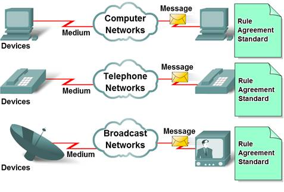

An Ethernet connection allows more than 1 computer to be hooked up together to share data between them. Ethernet can be used in schools, offices or homes so that the same information can be accessed by more than 1 computer and user. You can set up Ethernet on your own. Here are the steps you should follow when you want to know how to set up Ethernet.
Method 1 Router Network

1.
Install a Network Interface Card or NIC per computer you want to connect.
· A NIC is a like a modem for your computer but it is used for a local area network (LAN). You do not have to get an expensive network card; as long as it has 100 Mbps it will work fine.
· To install it you must first unplug your computer and remove the cover plate. Align the NIC over the slot that has the jack that is facing toward the outside of the computer. Put the NIC into the slot and press down firmly to secure. Replace the cover and plug the computer back in.
· Your NIC should come with a disk that will instruct you how to complete the software installation for the appropriate drivers. Follow the instructions to finish the installation of the NIC.

2. Connect Ethernet cables to the central location.
- You also need 1 Ethernet patch cable per computer. These Ethernet cables are blue cables that look like they have phone line plugs at the end. They will have 4 pairs of plugs rather than 2. Make sure that the cables that you purchase are long enough to reach from the central location to the other computers. The central location is where all the cables will go to access the same information and will probably be where your Internet feed is. The cables will plug into each NIC.

3. Plug all the Ethernet cables to the router.
- A router will make all the computers connected to be part of the same network. You will need a router that is at least 100 Mbps. If you want to be able to access the Internet from all computers, you will need to have your Internet connection plugged in the router's uplink port or WAN port.
Method 2 Hub Network

1. Use a crossover cable to connect 2 computer's Ethernet ports.
- In a hub network, you are merely connecting each device to the main hub via a crossover cable. Since there is no router involved in this Ethernet set up, the other computer is not connected to the Internet. It can share files and documents from the main computer and print from the same printer.
How to Connect 2 Routers
Connecting two routers can give your home network a serious boost. By wiring two routers together, you can create a network that spans your whole house, and even create sub networks to protect your children online. If your router supports it, you can set it as a bridge that will extend the range of your wireless signal, allowing you to finally get a signal in the garage or the backyard.
Method 1 Connecting 2 routers via Ethernet

1. Determine which router will be the main router. This will be the router that your modem is connected to. Generally, you'll want your newest and most fully-featured router as your base router. If you have two of the same router, it doesn't matter which one you pick.

2. Determine which router will be the secondary router. This will be the router that is extending your original network. This will usually be your older router. This router will control the secondary network if you are creating a LAN-to-WAN network (see below).

3. Place both routers near your computer. During the configuration process, you can keep the routers near your computer so that you can easily access them. You can set them up in their permanent locations later.

4. Decide between a LAN-to-LAN or LAN-to-WAN connection. A LAN-to-LAN (Local Area Network) connection extends your network size, allowing more devices to connect. Devices can share files and resources to any other device on the network. A LAN-to-WAN (Wide Area Network) connection creates a secondary network (LAN) inside the main network (WAN). This allows you to place restrictions on a subset of devices that are connected to the smaller network. The downside is that they cannot share files or resources with the main network.
- Setting up a LAN-to-WAN network allows you to modify the DNS for just the secondary network, affecting what sites can be visited. The secondary network also makes it extra difficult for hackers to access any devices connected. This is great for parents that want to monitor and control their children’s internet access.

5. Connect your main router to your modem, then connect your computer to the router via Ethernet. Configure it as you normally would to set up the network. Since this router will be handling the connection to the internet, set it up as if you were only using a single router.
- Most routers can be accessed by entering the address 192.168.1.1, 192.168.2.1, or 192.168.0.1
· Note router's IP address and subnet mask. The IP address is the same one that you used to access the router's configuration page. The subnet mask is typically 255.255.255.0
- If you are creating a LAN-to-WAN network, set the primary router's DHCP service to give out addresses between 192.168.1.2 and 192.168.1.50. If you are creating a LAN-to-LAN network, you can leave the DHCP settings at their default.
- Disconnect the computer from the router when you are finished configuring it.

6. Connect the computer to the secondary router. Open the configuration page. If you are making a LAN-to-LAN network, change the IP address so that it matches the first router, except increase the last digit by one (e.g. 192.168.1.1 becomes 192.168.1.2). If you are making a LAN-to-WAN network, change the IP address so that it matches the first router, except increase the second-to-last digit by one (e.g. 192.168.1.1becomes 192.168.2.1). Ensure that the subnet mask is the same as the primary router.
· If you are making a LAN-to-WAN network, change the secondary router's WAN IP address to 192.168.1.51.
7. If your router have the option UPnP disable it on the second router.

8. Configure the DHCP server on the secondary router. If you are creating a LAN-to-LAN network, the DHCP service should be turned off on the secondary router. If you are creating a LAN-to-WAN network, the DHCP server on the secondary router should hand out addresses between 192.168.2.2 and 192.168.2.50.

9. Change the wireless channel. If both routers are wireless, you will want to manually set the channels so that signals do not interfere with each other. Set your primary router to channels 1-6, and set your secondary router to channel

10. Place your routers. Now that everything is configured, you can place your routers wherever you need. Keep in mind that you will need to run Ethernet cable between the two routers. You can run Ethernet cable through the wall if you need to reach another room. For convenience, you'll probably want to place your primary router near your modem.

11. Connect the two routers. Plug one end of the Ethernet cable into any LAN port of the primary router.
· If you are creating a LAN-to-LAN network, plug the other end into a LAN port of the secondary router.
· If you are creating a LAN-to-WAN network, plug the other end into the WAN port of the secondary router.
Method 2 Bridging Two Wireless Routers

1. Determine if your equipment is compatible. In order to wirelessly bridge two routers, your secondary router must have "bridge" or "repeater" mode capabilities. This is not common for most retail routers. If your router does not support bridge mode, you may be able to flash DD-WRT onto it, a custom open-source firmware that enables bridge mode.
· Your router's documentation will let you know if it has bridge mode. You can also look your router's model up online.
· Not all routers support DD-WRT. Check the DD-WRT website to see a list of compatible routers.

2. Place both routers near your computer. During the setup process, it will be easier if you have quick access to both routers, as well as the modem. You can place the routers in their permanent locations when you are done configuring them.

3. Set up your primary router. Plug the primary router into the modem and then connect your computer to it via Ethernet. Your primary router will be configured as you normally would for a wireless network. Make note of the router's IP address, DHCP range, and subnet mask.
· Your primary router should be the router with the strongest antennas. This will allow you to set up the secondary router further away
· Disconnect your router after you have finished configuring it for a wireless network.

4. Open the configuration page on the secondary router. Connect the secondary router to your computer with an Ethernet cable and open the configuration page. You do not need to connect it to the modem. Find the "Internet" or "Wireless" setup page once you have logged in.

5. Enable Bridge Mode. Select "Bridge Mode" or "Repeater Mode" from the "Network Mode", "Wireless Mode" or "Connection Type" menu on the Wireless page. If you are using DD-WRT, select "Repeater Bridge".[3] If there is no menu to select these options, then your router likely does not support bridging.

6. Specify the secondary router's IP address. Enter in an IP address within the primary router's range. For example, if the primary router's IP address is 192.168.1.1, enter 192.168.1.50 or something else inside the DHCP range of the primary router.
· Ensure that the subnet mask is identical to the primary router.

7. Enter a unique SSID. This will help you know which router on the network you are connecting to. For example, you might have the primary labeled "Den" and the secondary labeled "LivingRoom".
· Ensure that the security is the same type (WEP, WPA, WPA2) and the same password.

8. Place the secondary router. Once you have the secondary router configured, you can place it where you want it to repeat the signal. In order to maintain a good connection, it should be placed in a location where it gets at least 50% signal strength from the primary router.